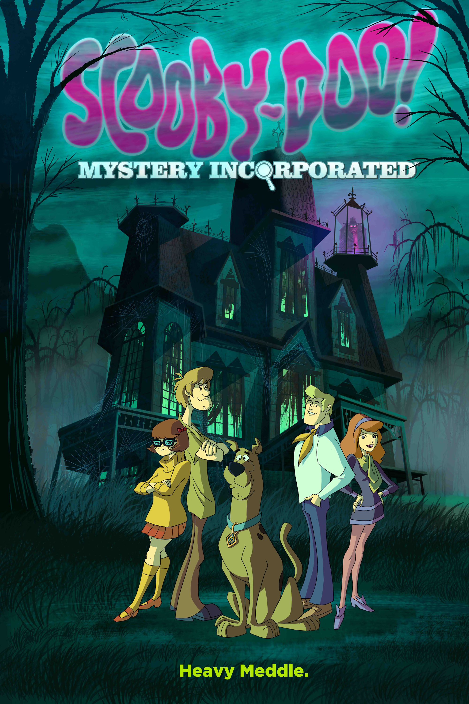

FilmReel Top 10 Cartoon
THIS IS JUST MY RECOMMENDATION
Top 10 Cartoon
THIS IS JUST MY RECOMMENDATION
#1
Avatar: The Last Airbender | 9.3
Creators: Michael Dante DiMartino Bryan Konietzko
62 Episodes | Adventure
Avatar: The Last Airbender follows Aang, the last Airbender and lost Avatar, as he masters the elements to stop the Fire Nation’s war. With friends Katara and Sokka, he embarks on a journey to restore balance to the world. Filled with action, humor, and deep themes, this beloved animated epic remains a timeless classic.
#2
Gravity Falls | 8.9
Creator: Alex Hirsch
41 Episodes | Dark Fantasy
Gravity Falls follows twins Dipper and Mabel Pines, who spend their summer in the mysterious town of Gravity Falls with their eccentric Great-Uncle Stan. As they uncover cryptic secrets and bizarre creatures, they realize the town is hiding more than meets the eye. Packed with humor, mystery, and heart, this animated series is a thrilling adventure for all ages.

#3
Samurai Jack | 8.2
Creator: Genndy Tartakovsky
62 Episodes | Dark Fantasy
Samurai Jack follows a noble samurai sent to the future by the evil demon Aku, where the world has fallen under his tyrannical rule. Armed with his magic sword, Jack embarks on a relentless quest to return to the past and undo Aku’s reign. With stunning visuals, minimalistic storytelling, and epic battles, this iconic series blends action, philosophy, and artistry into a timeless adventure.

#4
Scooby-Doo! | 8.2
Creator: Joe RubyKen
52 Episodes | Supernatural Fantasy
Scooby-Doo! follows a group of teenage detectives—Fred, Daphne, Velma, Shaggy, and their talking Great Dane, Scooby-Doo—as they travel in the Mystery Machine solving eerie mysteries. Using logic, teamwork, and a bit of luck, they unmask villains disguised as ghosts and monsters. Filled with humor, suspense, and iconic catchphrases, this classic series has entertained generations.

#5
Ben 10 | 7.5
Creators:Man of ActionJoe CaseyJoe Kelly
52 Episodes | Adventure
Ben 10 follows 10-year-old Ben Tennyson, who discovers the Omnitrix, a powerful alien device that lets him transform into different extraterrestrial heroes. With the help of his cousin Gwen and Grandpa Max, he battles villains, aliens, and threats to Earth while learning the true responsibilities of a hero. Packed with action, humor, and adventure, this iconic series launched a beloved franchise.
#6
Phineas and Ferb | 8.1
Creator: Jeff 'Swampy' Marsh
140 Episodes | Adventure
Phineas and Ferb follows two inventive stepbrothers who spend their summer building incredible inventions and going on wild adventures. Meanwhile, their sister Candace tries to bust them, and their pet platypus Perry secretly works as a spy fighting the evil Dr. Doofenshmirtz. With catchy songs, clever humor, and endless creativity, this animated series is a fun-filled adventure for all ages.
#7
Rick and Morty | 9.1
Creators: Dan HarmonJustin Roiland
78 Episodes | Adult Animation
Rick and Morty follows the misadventures of Rick Sanchez, a genius but reckless scientist, and his anxious grandson Morty as they travel across dimensions and alien worlds. Balancing dark humor, sci-fi chaos, and deep existential themes, the series explores the dangers of limitless intelligence and dysfunctional family dynamics. With sharp wit and wild creativity, it’s a mind-bending ride through the absurd and the profound.

#8
Futurama | 8.5
Creators: David X. CohenMatt Groening
180 Episodes | Adult Animation
Futurama follows Fry, a slacker from the 20th century who is accidentally frozen and wakes up 1,000 years in the future. He joins the Planet Express crew, including the one-eyed Leela and the mischievous robot Bender, for hilarious and often heartfelt adventures across the galaxy. Blending sci-fi, satire, and clever humor, this cult classic explores the future in the most absurd and entertaining ways.

#9

Invincible | 8.6
Creator: Robert Kirkman
25 Episodes | Superhero
Invincible follows Mark Grayson, a teenager who develops superpowers inherited from his father, Omni-Man, the world’s most powerful hero. As he trains to become a superhero, Mark uncovers dark secrets that challenge everything he believed. With intense action, emotional depth, and shocking twists, this animated series redefines the superhero genre.
#10
The Simpsons | 8.7
Creators: James L. BrooksMatt
781 Episodes | Adult Animation
The Simpsons follows the everyday lives of the Simpson family—Homer, Marge, Bart, Lisa, and Maggie—in the quirky town of Springfield. With sharp satire, cultural references, and memorable characters, the series humorously explores family life, society, and pop culture. As the longest-running animated sitcom, it remains a timeless classic in television history.